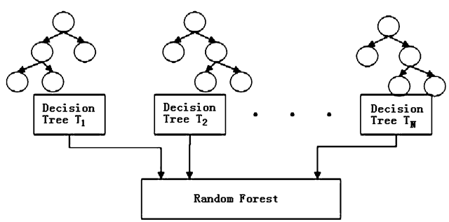

7.2 Random Forest
Averaging of independent trees
The goal of bagging is to produce \(\boldsymbol{B}\) separate training datasets that are independent of each other (typically 𝐵 is in the hundreds). The model of interest (in this case classification and regression trees) is trained separately on each of these datasets, resulting in \(\boldsymbol{B}\) different estimated “models”. These are then averaged to produce a single, low-variance estimate.
Bagging is a general approach, but its most well-known application is in the random forest algorithm:
- Construct \(\boldsymbol{B}\) bootstrap samples by sampling cases from the original dataset with replacement (this results in \(\boldsymbol{B}\) unique datasets that are similar to the original)
- Fit a classification and regression tree to each sample, but randomly choose a subset of \(m\) variables that can be used in the construction of that tree (this results in \(\boldsymbol{B}\) unique trees that are fit to similar datasets using different sets of predictors)
- For a given data-point, each of the \(\boldsymbol{B}\) trees in the forest contributes a prediction or “vote”, with the majority (or average) of these votes forming the random forest’s final prediction, \(\hat{y}_i\)

A downside of both the CART and random forest algorithms (as well as many other algorithmic modeling approaches) is an inability to clearly quantify the roles played by individual variables in making predictions. However, the importance of individual variables in a random forest can still be expressed using a measure known as variable importance.
The random forest algorithm requires the following tuning parameters be specified in order to run:
ntree- the number of bagged samples, \(\boldsymbol{B}\), onto which trees will be grownmtry- the number of variables that are randomly chosen to be candidates at each split- Some sort of stopping criteria for individual trees, this can be:
nodesize, which sets the minimum size of terminal nodes- larger
nodesizeleads to shallower trees - smaller node size allows for deeper, more complex trees
- larger
maxnodes, which sets the maximum number of terminal nodes an individual tree can have.
Applications of Random Forest
Some of the applications of Random Forest Algorithm are listed below:
- Banking: It predicts a loan applicant’s solvency. This helps lending institutions make a good decision on whether to give the customer loan or not. They are also being used to detect fraudsters.
- Health Care: Health professionals use random forest systems to diagnose patients. Patients are diagnosed by assessing their previous medical history. Past medical records are reviewed to establish the proper dosage for the patients.
- Stock Market: Financial analysts use it to identify potential markets for stocks. It also enables them to remember the behaviour of stocks.
- E-Commerce: Through this system, e-commerce vendors can predict the preference of customers based on past consumption behaviour.
When to Avoid Using Random Forests?
Random Forests Algorithms are not ideal in the following situations:
- Extrapolation: Random Forest regression is not ideal in the extrapolation of data. Unlike linear regression, which uses existing observations to estimate values beyond the observation range.
- Sparse Data: Random Forest does not produce good results when the data is sparse. In this case, the subject of features and bootstrapped sample will have an invariant space. This will lead to unproductive spills, which will affect the outcome.
FAQ
Q: Is RF a linear or non-linear model?
A: RF can capture complex, non-linear relationships.
Q: Is RF sensitive to Imbalanced Data?
A: Yes. It may perform poorly if the dataset is highly imbalanced like one class is significantly more frequent than another.
Q: What is the loss function?
A: Entropy/gini or any other loss function you want.
Q: Difference btw RF and a linear model?
A: A major difference is that a decision tree does not have “parameters”, whereas the linear models need to create a functional form and find the optimal parameters.
Q: Is RF regression a “true” regression?
A: Random forests discretize continuous variables since they are based on decision trees, which function through recursive binary partitioning. But with sufficient data and sufficient splits, a step function with many small steps can approximate a smooth function. As for whether it is a “true” regression, this is somewhat semantic. After all, piecewise regression is regression too, but is also not smooth. As is any regression with a categorical predictor. Source.
Implementation in R
ranger package offers a computation efficient function for RF.
RF_ranger <- ranger(formula = formula,
data = data_before[idx,],
probability = TRUE,
importance = "permutation",
scale.permutation.importance = TRUE,
)
# print(RF_ranger)
rf.pred.test <- predict(RF_ranger, data=data_before[-idx,])$predictionsParameters controlling the general process of RF:
probability=FALSE: Whether to forecast a probability forest.
The hyperparameters mtry, min.node.size and sample.fraction determine the degree of randomness, and should be tuned.
mtry=500: Number of variables to possibly split at in each node in one tree. In plain language, it indicates how many predictor variables should be used in each tree.- Default is the (rounded down) square root of the number variables. Alternatively, a single argument function returning an integer, given the number of independent variables.
- Range btw 1 to the number of predictors.
- If all predictors are used, then this corresponds in fact to bagging.
min.node.size: The number of observations a terminal node should at least have.- Default 1 for classification, 5 for regression, 3 for survival, and 10 for probability. For classification, this can be a vector of class-specific values.
- Range between 1 and 10
sample.fraction: Fraction of observations to be used in each tree. Default is 1 for sampling with replacement and 0.632 for sampling without replacement. For classification, this can be a vector of class-specific values.- Smaller fractions lead to greater diversity, and thus less correlated trees which often is desirable.
- Range between 0.2 and 0.9
Parameters controlling what and how intermediate results are saved:
keep.inbag = FALSE: Whether to save how often observations are in-bag in each tree.Set to
TRUEif you want to check sample composition in each tree.importance = 'none'|'impurity'|'impurity_corrected'|'permutation': Variable importance mode.scale.permutation.importance = FALSE: Whether to scale permutation importance by standard error as in (Breiman 2001). Only applicable if'permutation'variable importance mode selected.write.forest = TRUE: Whether to saveranger.forestobject, required for prediction. Set toFALSEto reduce memory usage if no prediction intended.- Set to
FALSEwhen you do parameter tuning.
- Set to
Q: How to tune hyperparameters?
A: Check out mlr3 package. Here is an example.
Imbalance Classification
You can balance your random forests using case weights. Here’s a simple example:
library(ranger)
# Make a dataste
set.seed(43)
nrow <- 1000
ncol <- 10
X <- matrix(rnorm(nrow * ncol), ncol=ncol)
CF <- rnorm(ncol)
Y <- (X %*% CF + rnorm(nrow))[,1]
Y <- as.integer(Y > quantile(Y, 0.90))
table(Y)
# Compute weights to balance the RF
w <- 1/table(Y)
w <- w/sum(w)
weights <- rep(0, nrow)
weights[Y == 0] <- w['0']
weights[Y == 1] <- w['1']
table(weights, Y)
# Fit the RF
data <- data.frame(Y=factor(ifelse(Y==0, 'no', 'yes')), X)
model <- ranger(Y~., data, case.weights=weights)
print(model)Code Source: https://stats.stackexchange.com/a/287849
Fixed proportion sampling: https://github.com/imbs-hl/ranger/issues/167
References:
https://remiller1450.github.io/m257s21/Lab10_Other_Models.html